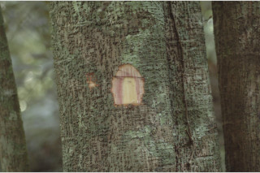
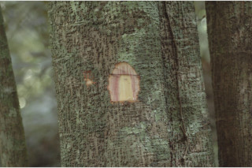
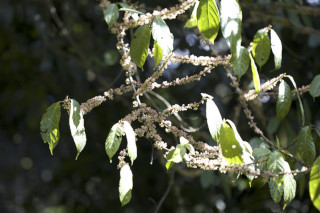
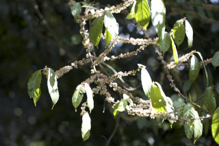
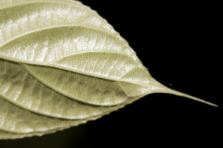
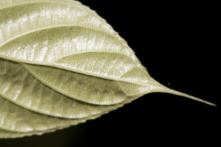

Trees up to 8 m tall.
8 ಮೀ. ಎತ್ತರದವರೆಗಿನ ಮರಗಳು.
Trees up to 8 m tall.
மரங்கள் 8 மீ. உயரம் வரை வளரக்கூடியது.
Bark brownish, lenticellate; blaze pinkish.
ತೊಗಟೆ ಕಂದು ಬಣ್ಣದಲ್ಲಿದ್ದು,ವಾಯು ವಿನಿಮಯ ಬೆಂಡು ರಂಧ್ರಗಳ ಸಮೇತವಿರುತ್ತದೆ.ಕಚ್ಚು ಮಾಡಿದ ಜಾಗ ನಸುಗೆಂಪು ಛಾಯೆ ಹೊಂದಿರುತ್ತದೆ.
Bark brownish, lenticellate; blaze pinkish.
மரத்தின் பட்டை ப்ரவுன் நிறமானது, பட்டைத்துளைகள் (லெண்டிசெல்லேட்) உடையது; உள்பட்டை பிங்க் நிறமானது.
Young branchlets obtusely angular, sparsely white pubescent.
ಕಿರುಕೊಂಬೆಗಳು ಚೂಪಲ್ಲದ ಕೋನಗಳ ಸಮೇತವಿರುತ್ತವೆ,ವಿರಳವಾದ ಬಿಳಿ ಬಣ್ಣದ ಮೃದುತುಪ್ಪಳದ ಸಮೇತವಿರುತ್ತವೆ.
Young branchlets obtusely angular, sparsely white pubescent.
சிறிய நுனிக்கிளைகள் சிறிது கோணங்களுடையது, ஆங்காங்கே வெள்ளை நிறமானது உரோமங்களுடையது.
Leaves simple, alternate, spiral, clustered at twig ends; stipule lanceolate, caducous and leaving scar; petiole 1-3.7 cm long, canaliculate or flat above, minutely grey pubescent; lamina 10-20 (25) x 2.5-6.4 cm, narrow elliptic to oblanceolate, apex caudate or caudate - acuminate, base subacute to cuneate, margin entire or crenulate towards apex, chartaceous, white pubescent on midrib and nerves beneath; midrib flat above; secondary_nerves 5-8 pairs, ascending, lower most pair opposite; tertiary_nerves reticulo-percurrent.
ಎಲೆಗಳು ಸರಳವಾಗಿದ್ದು ಪರ್ಯಾಯ ಮತ್ತು ಸುತ್ತು ಜೋಡನಾ ವ್ಯವಸ್ಥೆಯಲ್ಲಿದ್ದು ಕುಡಿಕೊಂಬೆಗಳ ತುದಿಯಲ್ಲಿ ಗುಂಪಾಗಿರುತ್ತವೆ;ಕಾವಿನೆಲೆಗಳು ಭರ್ಜಿಯ ಆಕಾರದಲ್ಲಿದ್ದು ಉದುರುವ ಮಾದರಿಯಲ್ಲಿದ್ದು ಉದುರಿ ಹೋದ ನಂತರ ಗುರುತುಗಳನ್ನು ಉಳಿಸುತ್ತವೆ;ತೊಟ್ಟುಗಳು 1 – 3.7 ಸೆಂ.ಮೀ.ವರೆಗಿನ ಉದ್ದವಿದ್ದು,ಮೇಲ್ಭಾಗದಲ್ಲಿ ಕಾಲುವೆಗೆರೆ ಹೊಂದಿರುತ್ತವೆ ಅಥವಾ ಚಪ್ಪಟೆಯಾಗಿರುತ್ತವೆ,ಸೂಕ್ಷ್ಮವಾದ ದಟ್ಟ ಮೃದುತುಪ್ಪಳದಿಂದ ಕೂಡಿರುತ್ತವೆ;ಪತ್ರಗಳು 10–20(25) X 2.5–6.4 ಸೆಂ.ಮೀ. ಗಾತ್ರ, ಸಂಕುಚಿತ ಚತುರಸ್ರದಿಂದ ಬುಗುರಿ-ಭರ್ಜಿಯವರೆಗಿನ ಆಕಾರ ಹೊಂದಿದ್ದು, ಬಾಲರೂಪಿ ಅಥವಾ ಬಾಲರೂಪಿ - ಕ್ರಮೇಣ ಚೂಪಾಗುವ ತುದಿ, ಉಪ-ಚೂಪು ಮಾದರಿಯಿಂದ ಬೆಣೆಯಾಕಾರದವರೆಗಿನನ ಬುಡ, ನಯವಾದ ಅಥವಾ ಅಗ್ರದ ಕಡೆಯಲ್ಲಿ ಸೂಕ್ಷ್ಮ ದುಂಡೇಣುಗಳನ್ನೊಳಗೊಂಡ ಅಂಚು ಹೊಂದಿದ್ದು, ಕಾಗದವನ್ನೋಲುವ ಮೇಲ್ಮೈ ಹೊಂದಿರುತ್ತವೆ , ಪತ್ರಗಳ ತಳಭಾಗದಲ್ಲಿನ ಮಧ್ಯನಾಳ ಮತ್ತು ಇತರೆ ನಾಳಗಳ ಮೇಲೆ ಮೃದುತುಪ್ಪಳವಿರುತ್ತದೆ;ಮಧ್ಯನಾಳ ಪತ್ರದ ಮೇಲ್ಭಾಗದಲ್ಲಿ ಚಪ್ಪಟೆಯಾಗಿರುತ್ತದೆ; ಎರಡನೇ ದರ್ಜೆಯ ನಾಳಗಳು 5 ರಿಂದ 8 ಜೋಡಿಗಳಿದ್ದು, ಆರೋಹಣ ಮಾದರಿಯಲ್ಲಿರುತ್ತವೆ, ತೀರಾ ತಳಗಿನ ಜೋಡಿಗಳು ಅಭಿಮುಖಿಗಳಾಗಿರುತ್ತವೆ; ಮೂರನೇ ದರ್ಜೆಯ ನಾಳಗಳು ಜಾಲಬಂಧ ನಾಳ ವಿನ್ಯಾಸದಲ್ಲಿದ್ದು ಎಲೆಯ ದಿಂಡಿಗೆ ಅಡ್ಡವಾಗಿ ಕೂಡುವ ಮಾದರಿಯಲ್ಲಿರುತ್ತವೆ.
Leaves simple, alternate, spiral, clustered at twig ends; stipule lanceolate, caducous and leaving scar; petiole 1-3.7 cm long, canaliculate or flat above, minutely grey pubescent; lamina 10-20 (25) x 2.5-6.4 cm, narrow elliptic to oblanceolate, apex caudate or caudate - acuminate, base subacute to cuneate, margin entire or crenulate towards apex, chartaceous, white pubescent on midrib and nerves beneath; midrib flat above; secondary_nerves 5-8 pairs, ascending, lower most pair opposite; tertiary_nerves reticulo-percurrent.
இலைகள் தனித்தவை, மாற்றுஅடுக்கமானவை, சுழல் போன்று அமைந்தவை, சிறுகிளைகளின் நுனியில் இலைகள் கூட்டமாக மற்றும் நெருக்கமாக காணப்படும்; இலையடிச்செதில் ஈட்டி வடிவானது, எளிதில் உதிரக்கூடியது மற்றும் தழும்புகளை ஏற்படுத்துகின்றன; இலைக்காம்பு 1-3.7 செ.மீ. நீளமானது, குறுக்குவெட்டுத் தோற்றத்தில் கேனாலிகுலேட் அல்லது பிளேனோகான்வக்ஸ், நுண்ணிய சாம்பல் நிறமான உரோமங்களுடையது; இலை அலகு 10-20 (25) X 2.5-6.4 செ.மீ., குறுகிய-நீள்வட்ட வடிவானது முதல் தலைகீழ் ஈட்டி வடிவானது, அலகின் நுனி வால் போன்றது அல்லது வால்-அதிக்கூரியது, அலகின் தளம் கிட்டதட்ட கூரியது முதல் ஆப்பு வடிவானது, அலகின் விளிம்பு முழுமையானது அல்லது அலகின் நுனிப்பகுதியில் சிறிய பிறை போன்ற பற்களுடையது, சார்ட்டோசியஸ், அலகின் கீழ்பரப்பில் மையநரம்பு மற்றும் பிற நரம்புகளில் வெள்ளை நிறமான உரோமங்களுடையது; மையநரம்பு மேற்புறத்தில் அலகின் பரப்பிற்கு சமமானது; இரண்டாம் நிலை நரம்புகள் 5-8 ஜோடிகள், நுனி நோக்கி வளைந்தவை, தளத்திலுள்ள ஒர் ஜோடி நரம்புகள் எதிரானாவை; மூன்றாம் நிலை நரம்புகள் வலைப்பின்னல்-பெர்க்கரண்ட் போன்றவை.
Inflorescence cymose clusters of heads, ca. 0.4 cm across, axillary or from leaf scars; flowers unisexual, monoecious or dioecious, subsessile.
ಪುಷ್ಪಮಂಜರಿ ಮಧ್ಯಾರಂಭಿ ಮಾದರಿಯವುಗಳಾಗಿದ್ದು ಗುಚ್ಛಗಳಲ್ಲಿನ ಚೆಂಡುಮಂಜರಿಯಲ್ಲಿರುತ್ತವೆ, 0.4 ಸೆಂ.ಮೀ.ಅಡ್ಡಗಲತೆ ಹೊಂದಿರುತ್ತವೆ,ಅಕ್ಷಾಕಂಕುಳಿನಲ್ಲಿ ಅಥವಾ ಎಲೆಯುದುರಿದ ಗುರುತುಗಳ ಮೇಲಿರುತ್ತವೆ;ಹೂಗಳು ಏಕಲಿಂಗಿಗಳಾಗಿದ್ದು,ಗಂಡು,ಹೆಣ್ಣು ಹೂಗಳು ಒಂದೇ ಸಸ್ಯದಲ್ಲಿ ಅಥವಾ ಪ್ರತ್ಯೇಕ ಸಸ್ಯಗಳಲ್ಲಿರುತ್ತವೆ, ಉಪ-ತೊಟ್ಟುಸಹಿತವಾಗಿರುತ್ತವೆ.
Inflorescence cymose clusters of heads, ca. 0.4 cm across, axillary or from leaf scars; flowers unisexual, monoecious or dioecious, subsessile.
மஞ்சரி சைம் வகை தொகுப்பாகமைந்த சீரமஞ்சரி, 0.4 செ.மீ. குறுக்களவுடையது, இலைக்கோணங்களில் காணப்படுபவை அல்லது இலைகளற்ற கிளைகளில் அமைந்தவை; மலர்கள் ஓர் பாலானவை, ஒரகம் கொண்டவை அல்லது ஈரகம் கொண்டவை, காம்பற்றது அல்லது மிகச்சிறிய காம்புடையது.
 

 


 
